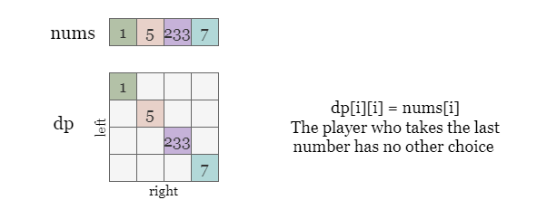

Before introducing the following approaches, we need to clarify the requirements of the problem. The problem isn't asking for what the final scores will be, but only if Player 1 will have a score greater than or equal to Player 2. Thus, to make the task easier, we can focus only on the score difference.
- 10 points for Player 1 and 10 points for Player 2
or- 100 points for Player 1 and 10 points for Player 2
There is no difference, as long as Player 1's score is greater than or equal to Player 2's, Player 1 has won.
During Player 1's turn, if he scores x points, his score difference to Player 2 will increase by
x.
Conversely, if Player 2 scores y points during his turn, it will decrease the score
difference between Player 1 and Player 2 by y points.
We can define a recursive function maxDiff(left, right) that takes the starting and ending indices
left and right of the list as input to maximize the current score difference between the
two players.
At each step, we simulate the current player selecting a number from the list and then call the function recursively to determine the optimal move for the next player. We update the score difference based on the player's move, and then return the maximum score difference that the first player can achieve.
Please note that: Both players play optimally, meaning they will choose the move that maximizes the score difference of himself from the other.
Taking the example in the figure, when it is the green player's turn for the subarray nums[left ~ right],
his maximum score difference is denoted by maxDiff(left, right). He has two choices:
nums[left] and nums[right].
If he chooses nums[left] and increases the score difference by nums[left], then the next
move will be made by the red player on the remaining array nums[left + 1 ~ right], and maxDiff(left
+ 1, right) represents the max score difference that the red player could lead the green player by.
However, this subproblem maxDiff(left + 1, right) is from the perspective of the red player, and the
positive gain for the red player is exactly the negative gain for the green player. Therefore, in our formula for
counting the current score gain of green player, the impact factor of the red player's gain is -1.
Therefore, by picking nums[left], the green player's maximum score difference is nums[left]
minus maxDiff(left + 1, right). Likewise, by picking nums[right], his
maximum score difference is nums[right] minus maxDiff(left, right - 1).
The green player shall pick the larger one of the two, that is:
maxDiff(left, right) = max(nums[left] - maxDiff(left + 1, right), nums[right] - maxDiff(left, right -
1)). We can recursively solve the problem until we reach the base case left = right, where the
game ends after the last player picks the final number and the maximum score difference he can make is nums[left].
Define maxDiff(left, right) as the maximum score difference the current player can achieve.
left = right, return nums[left].nums[left] or nums[right], the maximum
score difference he can get is the larger one from nums[left] - maxDiff(left + 1, right)
and nums[right] - maxDiff(left, right - 1).
Return if maxDiff(0, n - 1) >= 0. This call is from the perspective of the first player, and
the first player is the winner if the players have the same score (difference of 0).
Java
class Solution {
private int maxDiff(int[] nums, int left, int right, int n) {
if (left == right) {
return nums[left];
}
int scoreByLeft = nums[left] - maxDiff(nums, left + 1, right, n);
int scoreByRight = nums[right] - maxDiff(nums, left, right - 1, n);
return Math.max(scoreByLeft, scoreByRight);
}
public boolean PredictTheWinner(int[] nums) {
int n = nums.length;
return maxDiff(nums, 0, n - 1, n) >= 0;
}
}
Python3
class Solution:
def PredictTheWinner(self, nums: List[int]) -> bool:
n = len(nums)
def maxDiff(left, right):
if left == right:
return nums[left]
score_by_left = nums[left] - maxDiff(left + 1, right)
score_by_right = nums[right] - maxDiff(left, right - 1)
return max(score_by_left, score_by_right)
return maxDiff(0, n - 1) >= 0
Let nn
be the length of the input array nums.
Time complexity: O(2n)O(2^n)
left and right closer
by one.
maxDiff creates two more calls to maxDiff.
Thus the recursion tree having a depth of nn has O(2n)O(2^n) nodes, which is the time it takes to finish the
search. Note that the constraints have n <= 20. This approach would not be feasible
for larger values of n.
Space complexity: O(n)O(n)
maxDiff. It takes nn recursion steps to reach the base case,
thus the space complexity is O(n)O(n).
If you are not familiar with Dynamic Programming (DP), you can refer to our Dynamic Programming Explore Card for more information.
In the previous solution, we were calculating all encountered maxScore(left, right) recursively.
However, this included a lot of redundant calculations (as highlighted by colors in the figure below). Considering
the total number of combinations that left and right can form is only O(n2)O(n^2), if we use a cache to store the calculated maxScore(left,
right), we do not need to repeatedly calculate the same function from then on.
Therefore, we can use a hashmap or a two-dimensional array memo as a cache. Every time we calculate the
value of maxScore(left, right), we store it in memo. During the subsequent calculation
process, if we find that maxScore(left, right) has already been calculated, we can simply retrieve its
value memo[(left, right)] from the memo.
Initialize a 2D array or a hash map memo as a cache.
Define maxDiff(left, right) as the maximum score difference the current player can achieve. If
the state (left, right) is already stored in memo, we can just return memo[(left,
right)]. Otherwise:
left = right, return nums[left].nums[left] or nums[right], the maximum
score difference he can get is the larger one from nums[left] - maxDiff(left + 1, right)
and nums[right] - maxDiff(left, right - 1).
memo to avoid repeated calculations.memo[(left, right)].Return if maxDiff(0, n - 1) >= 0.
Java
class Solution {
int[][] memo;
private int maxDiff(int[] nums, int left, int right, int n) {
if (memo[left][right] != -1) {
return memo[left][right];
}
if (left == right) {
return nums[left];
}
int scoreByLeft = nums[left] - maxDiff(nums, left + 1, right, n);
int scoreByRight = nums[right] - maxDiff(nums, left, right - 1, n);
memo[left][right] = Math.max(scoreByLeft, scoreByRight);
return memo[left][right];
}
public boolean PredictTheWinner(int[] nums) {
int n = nums.length;
memo = new int[n][n];
for (int i = 0; i < n; ++i) {
Arrays.fill(memo[i], -1);
}
return maxDiff(nums, 0, n - 1, n) >= 0;
}
}
Python3
class Solution:
def PredictTheWinner(self, nums: List[int]) -> bool:
n = len(nums)
memo = collections.defaultdict(int)
def maxDiff(left, right):
if (left, right) in memo:
return memo[(left, right)]
if left == right:
return nums[left]
score_by_left = nums[left] - maxDiff(left + 1, right)
score_by_right = nums[right] - maxDiff(left, right - 1)
memo[(left, right)] = max(score_by_left, score_by_right)
return memo[(left, right)]
return maxDiff(0, n - 1) >= 0
Let nn
be the length of the input array nums.
Time complexity: O(n2)O(n^2)
We use a cache memo to store the computed states. During the recursion, the cache makes
sure we don't calculate a state more than once. The number of states (left, right) is
O(n2)O(n^2).
Space complexity: O(n2)O(n^2)
memo as memory, it contains at most O(n2)O(n^2) distinct states.
With recursion, we start at the original problem (left = 0, right = n - 1) and move down the tree,
combining answers to smaller subproblems to eventually form the answer to the original problem. We can also start
with the smaller subproblems and build up the solution for the larger problem. We represent all subproblems using a
2D array dp, where dp[left][right] indicates the maximum score that the current player can
get by playing on the subarray nums[left ~ right]. We start filling up the 2D array from the base
cases, solving smaller subproblems and using their solutions to solve larger subproblems until we reach the final
problem dp[0][n - 1].
Note that
dp[left][right]is analogous to whatmaxDiff(left, right)was in the previous approaches.

First, we fill up the diagonal elements of the 2D array dp[left][left] with the value
nums[left], since the player can only choose one number from this subarray (this is the base case).
Then, we move to the next diagonal elements dp[left][left + 1], where we calculate the maximum score
that the current player can get by choosing either nums[left] or nums[left + 1]. After
that, we move on to larger subarrays dp[left][left + 2], dp[left][left + 3], and so on
until we reach the final subarray dp[0][n - 1]. To fill dp[left][right], we consider two
cases: either the current player chooses the number nums[left] or the number nums[right].
nums[left], his score difference is increased by nums[left] - dp[left +
1][right].
nums[right], his score difference is increased by nums[right] - dp[left][right
- 1].
Since we are filling the dp table in a bottom-up manner, both dp[left + 1][right] and
dp[left][right - 1] have been solved previously.
When the iteration ends, dp[0][n - 1] depicts the maximum score difference achieved by the first player,
and we can determine if he wins by comparing it with 0.
Initialize an empty array dp of size n * n.
Fill each diagonal value dp[i][i] with nums[i].
Start with smaller subarrays nums[left ~ left + diff] = nums[left][right], for each
diff from 1 to n - 1, fill the diagonal cells
dp[left][right] as the larger one from:
nums[left] - dp[left + 1][right]nums[right] - dp[left][right - 1]Return if dp[0][n - 1] >= 0 when the iteration is complete.
Java
class Solution {
public boolean PredictTheWinner(int[] nums) {
int n = nums.length;
int[][] dp = new int[n][n];
for (int i = 0; i < n; ++i) {
dp[i][i] = nums[i];
}
for (int diff = 1; diff < n; ++diff) {
for (int left = 0; left < n - diff; ++left) {
int right = left + diff;
dp[left][right] = Math.max(nums[left] - dp[left + 1][right],
nums[right] - dp[left][right - 1]);
}
}
return dp[0][n - 1] >= 0;
}
}
Python3
class Solution:
def PredictTheWinner(self, nums: List[int]) -> bool:
n = len(nums)
dp = [[0] * n for _ in range(n)]
for i in range(n):
dp[i][i] = nums[i]
for diff in range(1, n):
for left in range(n - diff):
right = left + diff
dp[left][right] = max(nums[left] - dp[left + 1][right], nums[right] - dp[left][right - 1])
return dp[0][n - 1] >= 0
Let nn
be the length of the input array nums.
Time complexity: O(n2)O(n^2)
Space complexity: O(n2)O(n^2)
Recall the order of filling in dp in the previous approach. We fill the first diagonal which stands for
all subarrays of length 1 in the 1st round, then move on to the upper secondary diagonal that represent all
subarrays of length 2, and so on.
We only need the previous (lower) diagonal to fill the current (upper) diagonal.
By observing the pattern of filling dp, we can optimize the space complexity to O(n)O(n) by only storing the
previous diagonal of dp, and updating new_dp of shorter length. Then we can reset
dp as dp = new_dp and reuse it for the next round.
Furthermore, we don't even need to create new_dp. We can simply update dp in-place
repeatedly:
[dp[0], dp[1], dp[2], dp[3]][new_dp[0], dp[1], dp[2], dp[3]].[new_dp[0], new_dp[1], dp[2], dp[3]][new_dp[0], new_dp[1], new_dp[2], dp[3]]now the first 3 elements in dp will represent new_dp.
We continue this updating process for n rounds, and the first element in the array represents dp[0][n-1]
in the 2D array, which is the maximum score difference achieved by Player 1.
Initialize an empty array dp of size n.
Set each value dp[i] as nums[i].
Start with each shorter diagonal, for each diff from 1 to n - 1,
update the first n - diff cells in place using every two adjacent cells in dp.
dp[left] equals the larger one of:
nums[left] - dp[left + 1]nums[right] - dp[left]Return if dp[0] >= 0 after the iteration is complete.
Java
class Solution {
public boolean PredictTheWinner(int[] nums) {
int n = nums.length;
int[] dp = Arrays.copyOf(nums, n);
for (int diff = 1; diff < n; ++diff) {
for (int left = 0; left < n - diff; ++left) {
int right = left + diff;
dp[left] = Math.max(nums[left] - dp[left + 1], nums[right] - dp[left]);
}
}
return dp[0] >= 0;
}
}
Python3
class Solution:
def PredictTheWinner(self, nums: List[int]) -> bool:
n = len(nums)
dp = nums[:]
for diff in range(1, n):
for left in range(n - diff):
right = left + diff
dp[left] = max(nums[left] - dp[left + 1], nums[right] - dp[left])
return dp[0] >= 0
Let nn
be the length of the input array nums.
Time complexity: O(n2)O(n^2)
We fill n cells of dp in the 1st round, then n - 1 cells in
the 2nd round, and so on. The total number of updated cells is O(n2)O(n^2), each cell takes constant time.
Space complexity: O(n)O(n)